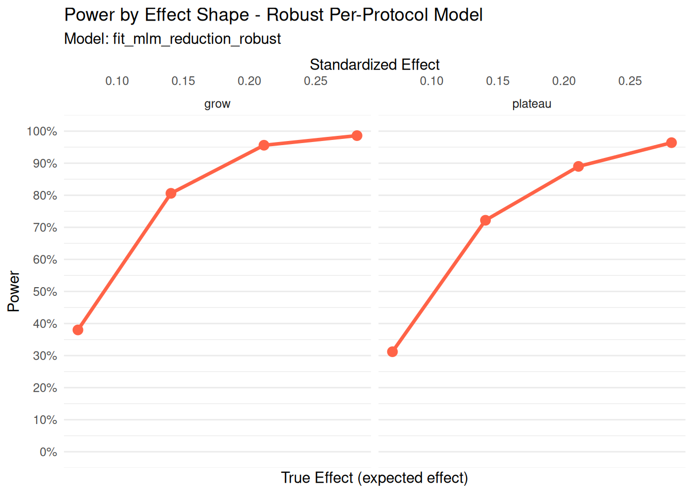

This section demonstrates a complete workflow for generating synthetic data, introducing dropout, and fitting models (a GAM or MLM) to the data. The main focus is on the sim_study function, which orchestrates the data simulation, dropout process, and model fitting.
As an overview, we compare the following possible models for estimating the effect of gaming reduction, for both H3a (the intention-to-treat effect) and H3b (the per-protocol effect; i.e., the effect of actual gaming reduction relative to one’s own baseline). The models we compare are:
ITT = Intention-to-treat; PP = per-protocol
Model Name
Syntax
Target Effect
Notes
GAM
gam(wellbeing ~ condition:intervention_period + age + gender + s(id, bs = "re") + s(day, by = condition, bs = "tp"), correlation = corAR1(form = ~ day | id))
ITT
GAM with no main effect)
gam(wellbeing ~ age + gender + s(id, bs = "re") + s(day, by = condition, bs = "tp"), data = dat, correlation = corCAR1(form = ~ day | id))
ITT
Here we do not estimate a parameter for the effect of the intervention directly; rather, we simply fit separate curves to each condition and calculate the average marginal effect using {emmeans}
MLM
lme( fixed = wellbeing ~ condition*intervention_period + age + gender, random = ~ 1|id, correlation = corCAR1(form = ~ day | id), method = "ML" )
ITT
Multiple versions of this model failed when including random slopes; we therefore dropped these
MLM Simple
lme( fixed = wellbeing ~ baseline + condition + age + gender, random = ~ 1 + condition|id, correlation = corCAR1(form = ~ day | id), method = "ML", )
ITT
Here we do not model the baseline (pre-intervention period) itself—we model only the 14-day period when the intervention is active, using average wellbeing during baseline as a covariate
GLS (generalized least squares)
gls( wellbeing ~ condition * intervention_period + age + gender, correlation = corCAR1(form = ~ day | id), )
ITT
GLS Simple
gls( wellbeing ~ condition + baseline + age + gender, correlation = corAR1(form = ~ day | id), )
ITT
GLS Splines
gls( wellbeing ~ ns(day, df = 4) * intervention_period * condition,, correlation = corCAR1(form = ~ day | id), data = dat )
ITT
In this version, we fit a GLS but allow non-linearity in the trajectory of wellbeing using splines
MLM Reduction
lme( fixed = wellbeing ~ intervention_active*reduction + age + gender, random = ~ 1 + intervention_active*reduction | id, correlation = corCAR1(form = ~ day | id) )
PP
Here we test our intended model for the per-protocol effect; reduction is the number of hours played relative to that person’s mean playtime at baseline
4.1.1 Take-aways
Our simulations show that several models perform well at parameter recovery for the ITT effect, but that the GAM model has the highest power for small effects—the type of effects we believe we are most likely to observed—and for non-linear trajectories over the 14 day period (e.g., an effect that slowly accumulates over a couple of days and then plateaus, or a temporary withdrawal followed by a later improvement). The GAM has approximately 50% power for a standardized effect of .2, and 80% power for a standardized effect of .3, but this varies based the shape of that effect over time.
The MLM Reduction model performs very well, and has >95% power for standardized effects of approximately .2 or greater.
4.1.2 Load Libraries
First we load packages with pacman, which is fully compatible with renv.
sim_data: Generates synthetic data with random intercepts/slopes and AR(1) errors.
sim_dropout: Introduces missingness and dropout in the dataset.
fit_*: Fits a statistical model to the simulated data (see table above)
sim_study: Ties everything together—generates data, applies dropout, then fits the chosen model and returns a tidy summary.
Show code (sim functions)
#' Generate Synthetic Data#'#' This function simulates synthetic panel data for `n` participants over `n_days` time points,#' with an intervention effect, random intercepts and slopes, and AR(1)-correlated residuals.#'#' @param n Number of participants. Default is 100.#' @param n_days Number of time points per participant.#' @param b Fixed effect of condition (if mediated == FALSE) or a 1-hour reduction in playtime.#' @param phi AR(1) autocorrelation coefficient.#' @param sigma AR(1) residual standard deviation.sim_data <-function(n =100,n_days =28,# effect parametersb =3.7, # effect in unstandardized unitsmu =78.5, # grand mean of the outcome# random effects parameterstau_int =9.7, # Random intercept SD (between-person variance)tau_slope = .05, # Random slope SD within_person_sd =11.8, # Within-person SD# AR(1) parametersphi =0.8, # Autocorrelation coefficienteffect_shape ="grow",k = .5, # affects how quickly the plateau effect plateausmediated =FALSE,# playtime parametersplaytime_grand_mean =1, # Average baseline playtime in hoursplaytime_grand_sd = .5, # SD for baseline playtime in log units (log-normal distribution)daily_play_sd =0.5# Daily noise in playtime# compliance_mean = 0.7, # Average reduction (in hours) for intervention group during intervention period) { dat <-tibble(id =1:n,age =sample(18:36, n, replace =TRUE),gender =sample(c("man","woman","non-binary"), n, prob =c(.45, .45, .1), replace =TRUE),condition =factor(sample(c("control", "intervention"), n, replace =TRUE)),experimental_condition =ifelse(condition =="intervention", 1, 0),intercept_wb =rnorm(n, 0, tau_int),slope_wb =rnorm(n, 0, tau_slope),intercept_play =rlnorm(n, log(playtime_grand_mean), playtime_grand_sd), ) |># expand to 28 waves per idcrossing(day =1:n_days ) |>mutate(intervention_period =as.numeric(day >7& day <22),intervention_active = intervention_period & condition =="intervention",compliance =ifelse(intervention_active, rkumar(n*n_days, a = .05, b = .1), 0),# In the baseline period, play is just the subject’s baseline plus some day-to-day noise# During the intervention, experimental subjects reduce play by their compliance amountplaytime = (1- compliance) *rlnorm(n, log(intercept_play), daily_play_sd),effect_time =case_when( effect_shape =="plateau"~if_else(intervention_period ==1, (b + slope_wb) * (1-exp(-k * (day -7))), 0), effect_shape =="grow"~if_else(intervention_period ==1, (day -7) * ((b + slope_wb)/7), 0),TRUE~NA_real_ ), ) |>group_by(id) |>mutate(baseline_playtime =mean(playtime[day <=7]),reduction = baseline_playtime - playtime, # The mediator: reduction in play relative to the baseline averagesigma = within_person_sd *sqrt(1-phi^2),# Generate AR(1) errors for each participante =as.numeric(arima.sim(n = n_days, model =list(ar = phi), sd = sigma)),# Add random effect + fixed effect + AR(1) errorwellbeing =case_when( mediated ==TRUE~ mu + intercept_wb + effect_time * reduction + .01*(age-18) +-.05*gender %in%c("women","non-binary") + e, mediated ==FALSE~ mu + intercept_wb + effect_time * experimental_condition * intervention_period + .01*(age-18) +-.05*gender %in%c("women","non-binary") + e ) ) |>ungroup() |>mutate(across(where(is.numeric), ~round(., 3))) dat}#' Simulate Dropout#'#' Introduces missingness and dropout into a dataset by randomly assigning records as missing#' or dropped out. Once a participant is dropped out, all subsequent records become missing.#'#' @param dat A tibble generated by \code{sim_data()}.#'#' @return A tibble of the same structure as \code{dat}, but with some \code{wellbeing} values set to NA.#'sim_dropout <-function(dat) { dropout <- dat |>mutate(missing =sample(c(TRUE, FALSE), n(), replace =TRUE, prob =c(.10, .90)),dropout =sample(c(TRUE, FALSE), n(), replace =TRUE, prob =c(.01, .99)) ) |>mutate(missing =ifelse(cumsum(dropout) >0, TRUE, missing),.by = id ) |>arrange(as.integer(id), day) |>mutate(wellbeing =ifelse(missing, NA, wellbeing)) dropout}#' Fit a Generalized Additive Model (GAM)#'#' Fits a GAM model to the provided dataset using \code{mgcv::gam}, including an AR(1)#' correlation structure and random intercept for each ID.#'#' @param dat A tibble of repeated-measures data (e.g., from \code{sim_data()} and \code{sim_dropout()}).#'#' @return An object of class \code{gam}, which is the fitted GAM model.#'fit_gam <-function(dat) {gam(wellbeing ~ condition:intervention_period + age + gender +s(id, bs ="re") +s(day, by = condition, bs ="tp"), data = dat,correlation =corAR1(form =~ day | id))}fit_gam_no_main <-function(dat) {gam(wellbeing ~ age + gender +s(id, bs ="re") +s(day, by = condition, bs ="tp"), data = dat,correlation =corCAR1(form =~ day | id))}#' Fit a Multi-Level Model (MLM)#'#' Fits a linear mixed-effects model (LME) with random intercept for each ID using \code{lme4::lmer}.#'#' @param dat A tibble of repeated-measures data (e.g., from \code{sim_data()} and \code{sim_dropout()}).#'#' @return An object of class \code{lmerMod}, which is the fitted MLM model.#'fit_mlm <-function(dat) {# lmer(wellbeing ~ condition*intervention_period + age + gender + (1|id), data = dat)lme(fixed = wellbeing ~ condition*intervention_period + age + gender,random =~1|id, # or use a more flexible structure if neededcorrelation =corCAR1(form =~ day | id),method ="ML",data = dat |>filter(!is.na(wellbeing)) )}fit_mlm_simple <-function(dat) { tmp <- dat |>group_by(id) |># take the mean of days 1-7 mutate(baseline =mean(wellbeing[day <8], na.rm =TRUE)) |>filter(intervention_period ==1) |>filter(!is.na(wellbeing))lme(fixed = wellbeing ~ baseline + condition + age + gender,random =~1+ condition|id,correlation =corCAR1(form =~ day | id),method ="ML",data = tmp |>filter(!is.na(wellbeing)) )}fit_gls <-function(dat) {gls( wellbeing ~ condition * intervention_period + age + gender, correlation =corCAR1(form =~ day | id),data = dat |>filter(!is.na(wellbeing)) )}fit_gls_simple <-function(dat) { tmp <- dat |>group_by(id) |># take the mean of days 1-7 mutate(baseline =mean(wellbeing[day <8], na.rm =TRUE)) |>filter(intervention_period ==1) |>filter(!is.na(wellbeing))gls( wellbeing ~ condition + baseline + age + gender, correlation =corAR1(form =~ day | id),data = tmp )}fit_gls_spline <-function(dat) {gls( wellbeing ~ns(day, df =4) * intervention_period * condition,, correlation =corCAR1(form =~ day | id),data = dat )}fit_mlm_reduction <-function(dat) {lme(fixed = wellbeing ~ intervention_active*reduction + age + gender, random =~1+ intervention_active*reduction | id,correlation =corCAR1(form =~ day | id),data = dat )}# Helper function to extract the focal effect for GLS modelsextract_marginal_effect <-function(mod, dat, focal_term ="conditionintervention") {# Here we assume your GLS model is specified with condition*intervention_period# and you want the effect of condition (e.g., intervention vs. control) during intervention.# We create a reference grid that fixes intervention_period at 1. rg <-ref_grid(mod, data = dat, at =list(intervention_period =1))# Obtain estimated marginal means for each condition. emm <-emmeans(rg, ~ condition)# Compute the pairwise contrast (e.g., intervention - control)# Adjust names as needed. The contrast below returns a one-row summary. contr <- emmeans::contrast(emm, method =list("intervention - control"=c(-1, 1)), adjust ="none") contr_sum <-summary(contr, infer =TRUE)# Construct a one-row data frame with consistent column names.# If you have more than one contrast, you might need to filter for the one of interest. df <-data.frame(term = focal_term,estimate = contr_sum$estimate,std.error = contr_sum$SE,conf.low = contr_sum$lower.CL,conf.high = contr_sum$upper.CL,row.names =NULL )return(df)}#' Simulation Study Orchestrator#'#' A higher-level function that ties together data simulation, dropout, and model fitting,#' returning a tidy summary of the fitted model parameters.#'#' @param model_function A function to fit the model. Defaults to \code{fit_gam}.#' @param n Number of participants passed to \code{sim_data()}. Default is 1000.#' @param n_days Number of time points per participant passed to \code{sim_data()}. Default is 28.#' @param b Fixed effect for the intervention slope passed to \code{sim_data()}. Default is 0.01.#' @param phi AR(1) autocorrelation coefficient passed to \code{sim_data()}. Default is 0.7.#' @param sigma AR(1) residual standard deviation passed to \code{sim_data()}. Default is 0.6.#'#' @return A data frame (tibble) of model estimates from \code{broom::tidy(parametric = TRUE)}.#'# Updated simulation orchestrator that handles GLS models separately.sim_study <-function(model ="fit_gam", focal_term ="intervention_activeTRUE:reduction", ...) { args <-list(...) dat <-do.call(sim_data, args) model_function <-get(model) mod <-model_function(dat)if (model %in%c("fit_gam_no_main","fit_gls_spline")) {# Extract the effect using our helper function. result <-suppressMessages(extract_marginal_effect(mod, dat, focal_term = focal_term)) } else {# For models that work with broom, extract the focal parameter.# Adjust the filtering term as needed. result <- broom::tidy(mod, parametric =TRUE) %>%filter(term == focal_term) |># filter(# term == "conditionintervention:intervention_period" | # (model %in% c("fit_mlm_simple","fit_gls_simple") & term == "conditionintervention")# ) |> mutate(conf.low = estimate -1.96* std.error,conf.high = estimate +1.96* std.error ) } result}
4.2 Test and Plot One Simulated Study
Below, we create a sample dataset using sim_data() and examine it with a line plots by day. We can also see whether the simulated SDs for wellbeing align with the target values in the simulation—luckily, they do.
Show code (descriptive plotting)
dat <-sim_data(effect_shape ="plateau", mediated =TRUE)sds <- dat |>group_by(id) |>summarise(mean_value =mean(wellbeing, na.rm =TRUE),sd_within =sd(wellbeing, na.rm =TRUE)) |>summarise(between_sd =sd(mean_value, na.rm =TRUE),avg_within_sd =mean(sd_within, na.rm =TRUE))# plot wellbeing by groupdat |>group_by(condition, day) |>summarise(wellbeing =mean(wellbeing)) |>ggplot(aes(y = wellbeing, x = day, color = condition)) +geom_line() +theme_minimal() +scale_y_continuous(limits =c(60, 100))
4.2.1 Test Fit (H3a - intention to treat)
We fit various models to the newly simulated data to make sure each appears to be working properly, and also test the full sim_study pipeline.
Since some models (e.g., fit_gam_no_main) do not have a parameter that represents the average difference-in-difference between groups during the intervention period, we need to calculate this ourselves by marginalize across the 14-day intervention period.
Show code (test emmeans)
emm_day <-emmeans(fit_gls_spline(dat), pairwise ~ condition | day, at =list(day =8:21), condition =c("control", "intervention"), data = dat |>mutate(condition =factor(condition, levels =c("intervention", "control"))))summary(emm_day$contrasts, infer =TRUE, level = .95, by =NULL, adjust ="none")# and then integrated over the 14 day intervention periodrg <-ref_grid(fit_gls_spline(dat),at =list(intervention_period =1),cov.reduce =list(day = mean),data = dat |>mutate(condition =factor(condition, levels =c("control","intervention"))))emm <-emmeans(rg, ~ condition)(contrast_result <-contrast(emm, method =list("intervention - control"=c(-1, 1)), adjust ="none"))means <-summary(emm)$emmeannames(means) <-summary(emm)$condition(diff_manual <- means["intervention"] - means["control"])
4.2.2 Test Fit (H3b - per-protocol)
Another quick test of our fit_mlm_reduction model, to make sure the alternative simulation whereby the effect of the intervention is mediated by a reduction in playtime is also functioning properly.
Show code (test fit h3b)
dat <-sim_data(mediated =TRUE)fit_mlm_reduction(dat) |>summary()
4.3 Simulated H3a power analysis
To assess power/sensitivity, we run multiple simulations (controlled by n_sims) and gather the parameter estimates for a particular term (e.g., conditionintervention:intervention_periodTRUE, or for our marginalized effect conditionintervention). Each iteration calls sim_study, which does the data generation, dropout, and fitting.
As this is quite slow, we both use parallel processing with furrr cache the results.
Same thing as above, but now looking at power for our per-protocol model.
Show code (sim study h3b)
n_sims <-500specs_h3b <-expand_grid(model =c("fit_mlm_reduction"), # model names as stringsb =c(1.2, 2.4, 3.6, 4.8),effect_shape =c("grow", "plateau")) |># calculate the mean of the Kumaraswamy distribution - the expected effect size of the mediated version is b * average compliancemutate(focal_term =case_when( model =="fit_mlm_reduction"~"intervention_activeTRUE:reduction" ),expected_effect = b * .1*beta(1+1/.05, .1), ) |> (\(d) { d$row_id <-pmap_chr(d, ~paste0(names(list(...)), "=", c(...), collapse ="_")); d })() |>mutate(i =row_number())results_h3b <- specs_h3b |>rowwise() |>mutate(sim_results =list({message("Processing spec row: ", i)future_map_dfr(1:n_sims, function(sim) {library(tidyverse)library(nlme)library(broom.mixed)library(extraDistr)library(rms)tryCatch({sim_study(model = model, # retrieve the function from its namefocal_term = focal_term,n =100,n_days =28,# effect parametersb = b, # effect in unstandardized unitsmu =78.5, # grand mean of the outcomeeffect_shape = effect_shape,k = .5,# random effects parameterstau_int =9.7, # Random intercept SD (between-person variance)tau_slope = .8, # Random slope SD within_person_sd =11.8, # Within-person SD# AR(1) parametersphi =0.7, # Autocorrelation coefficientmediated =TRUE ) |>mutate(sim = sim) }, error =function(e) {message("Simulation ", sim, " failed: ", e$message)tibble(term =NA_character_,estimate =NA_real_,std.error =NA_real_,conf.low =NA_real_,conf.high =NA_real_,sim = sim ) }) }, .progress =TRUE,.options =furrr_options(globals =c("specs","sim_study", "sim_data", "fit_mlm_reduction"),seed =TRUE) ) })) |>ungroup() |>unnest(sim_results)sim_summary_h3b <- results_h3b |>group_by(row_id) |>summarise(model =first(model),b =first(b),expected_effect =first(expected_effect),effect_shape =first(effect_shape),mean_effect =mean(estimate, na.rm =TRUE),mean_se =mean(std.error, na.rm =TRUE),mean_conf.low =mean(conf.low, na.rm =TRUE),mean_conf.high =mean(conf.high, na.rm =TRUE),power =sum(conf.low >0, na.rm =TRUE) /sum(!is.na(conf.low)) )
Show code (visualize power h3b)
# Estimated effect vs. true effect (b)ggplot(sim_summary_h3b, aes(x = expected_effect, y = mean_effect, color = model)) +geom_point(size =3) +geom_errorbar(aes(ymin = mean_conf.low, ymax = mean_conf.high), width =0.1) +facet_wrap(~ effect_shape) +geom_abline(slope =1, intercept =0, linetype ="dashed", color ="gray") +labs(x ="True Effect (unstandardized b)", y ="Estimated Effect",title ="Estimated vs. True Effects by Model and Effect Shape") +scale_x_continuous(breaks =c(1.2, 2.4, 3.6, 4.8, 6),sec.axis =sec_axis(~ . /12, name ="Standardized Effect (b/12)"))
Show code (visualize power h3b)
# Power vs. true effect (b)ggplot(sim_summary_h3b, aes(x = expected_effect, y = power, color = model)) +geom_line(size =1) +geom_point(size =3) +facet_wrap(~ effect_shape) +labs(x ="True Effect (unstandardized b)", y ="Power",title ="Power by Model and Effect Shape") +scale_x_continuous(breaks =c(1.2, 2.4, 3.6, 4.8, 6),sec.axis =sec_axis(~ . /12, name ="Standardized Effect (b/12)")) +scale_y_continuous(labels = scales::percent_format(accuracy =1), limits =c(0, 1), breaks =seq(0, 1, .1))

4.5 Planned Sensitivity Analyses
We have preregistered several sensitivity analyses to test the robustness of any effects we find. These include:
Day 21 only: We will estimate the effect of the intervention on day 21 only, to see what the difference between groups is at the end of the intervention period
Marginal means: In H3a, we will use the emmeans package to calculate marginal means for each condition and produce a single parameter by integrating across the 14-day period
Multilevel model: We will fit the MLM as defined in Table 1 above, as the second-highest performing model in the simulations (having higher power for linear effects, but lower for non-linear)